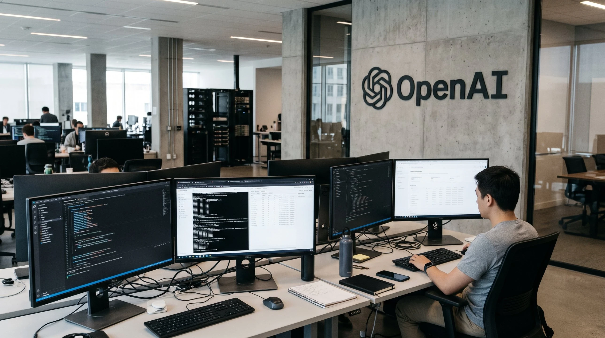

OpenAI Says Coding Agents Now Complete 46% of Selected Research Tasks
The company reports faster internal workflows, but uneven task performance and rising usage costs complicate the productivity story.

A measurable change inside an AI lab
OpenAI says its coding agents now complete 46% of selected research tasks estimated to require two to four hours of human work, up from 23% in March. The company published the figures in a November 18 report on how AI tools are changing its own research process. The findings offer a rare quantitative look inside a frontier AI lab, but they should be read as company-reported evidence rather than an independent measure of productivity across the technology industry.
For tasks estimated to take four to eight hours, OpenAI’s reported success rate rose from 13% to 35%. It measures completion without human intervention. OpenAI also cautions that researchers may have changed which tasks they delegate within each duration band, so the trend reflects both model capability and task selection. It does not mean that nearly half of all AI research can now be delegated safely or that agents can independently run a complete model-development program.
The company says results vary sharply by task. Agents were estimated to succeed 79% of the time when monitoring training runs, 35% when launching them and 25% when writing code for inference and serving systems. The gaps show why a single automation percentage can hide important differences between routine monitoring, operational execution and complex engineering.
The cost of using agents is rising too
OpenAI’s report also puts a price on the growing use of internal agents. At API list prices, the median researcher’s daily agent usage reached about $2,400 in October, 62% higher than September. Usage at the 90th percentile reached approximately $23,000 per day, up 105% from the previous month. These are list-price equivalents for internal activity, not a statement that every researcher or outside customer pays those amounts.
The company attributes the increase to more activity, shifts toward more expensive models and changes in model behavior and agent frameworks. Higher usage can reflect more work being delegated, but also longer reasoning runs, repeated attempts or costlier systems, so a larger bill is not automatically evidence of a proportional gain in output.
OpenAI also calculated that researchers used an average of 5.7 eight-hour “agent workdays” per person per calendar day, compared with 0.5 in an earlier period. This measures accumulated agent runtime, not one employee working more than five days in a day, since multiple agents can run concurrently.
Automation is uneven across the research process
The report divides research into inputs, process and outputs. Coding agents are one input alongside human labor, data and computing power. The output stage tracked measures such as code changes, experiment volume and model capability indicators.
OpenAI cautions that activity measures do not necessarily prove faster scientific progress. More experiments can mean a team is testing more ideas, but not that they are better designed. The company’s own task-level results point to bottlenecks in building evaluation environments and writing production inference code.
Researchers interviewed for the report described agents as useful for implementation, debugging, scanning large datasets and monitoring experiments. They also described errors in code quality, data quality and analysis assumptions, and the need to review an initial output before letting a system repeat a task at scale.
The safety and governance question grows with capability
OpenAI says documented research work in Safety and Alignment increased 77% from January to September, the largest absolute increase among the research areas it tracked. The company links the growth to both new hires and existing researchers shifting toward safety work. The measurement relies on internal contributions such as posts, pull requests and documents, so it is a proxy for attention rather than a direct measure of safety outcomes.
The report frames these figures within the question of recursive self-improvement: whether AI systems can accelerate the development of future AI systems. OpenAI says labs should track and publicly report indicators of this process, while stressing that the report is not an intention to pursue full self-improvement.
Faster research can increase both commercial advantage and the consequences of mistakes. A system that monitors experiments reliably may still fail when asked to launch them. Organizations deploying agents outside a research lab need controls over permissions, code review, data access and rollback.
What the figures mean for enterprise buyers
For businesses evaluating coding agents, OpenAI’s results are a useful case study but not a ready-made return-on-investment calculation. The reported success rates concern internal research tasks and a specific evaluation design. A company writing ordinary business software may have different codebases, compliance obligations and tolerance for failure. Its own pilot should measure completed work, review time, rework, incident rates and total cost.
Agent spending should be assessed alongside the labor and compute it replaces or complements. The TTN guide to free cash flow explains why recurring operating cash and investment commitments need to be separated when evaluating technology spending. The guide to earnings beats and misses also shows why one headline metric rarely captures the full performance picture.
The economic case will be strongest where organizations can identify repeatable work, verify outputs cheaply and keep the cost of failed attempts below the value of the time saved.
A productivity signal, not a universal benchmark
OpenAI’s data suggest that agent use is becoming embedded in the daily operation of at least one leading AI research organization. They do not establish that every lab has reached the same level, or that the same rates apply to software teams, banks or smaller companies.
For now, the report gives markets two signals to watch together: automation is expanding, and the resources consumed by that automation are rising. The long-term value depends on whether higher usage produces better research outcomes, shorter development cycles and reliable systems.